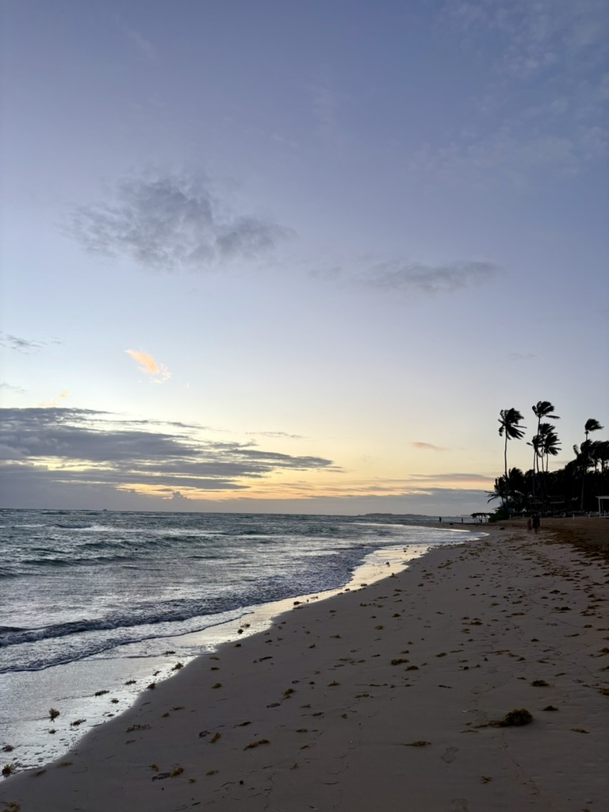
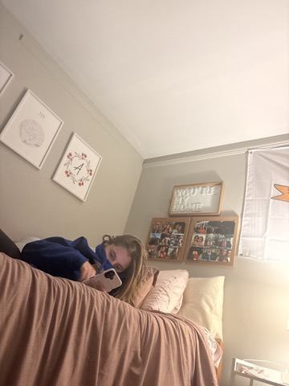

Sound and Image
Sound Composition
This Sound Composition was my first interaction with the softare Audacity. I collected sounds and made a musical arrangement of chaos to represent the life of a college student.
Exploratory Podcast
For the Exploratory Podcast, I dive into the conversation whether children are actually innocent or whether soicety makes stereotypes them as innocent. This was inspired by my research from another class and I use scholarly sources to reach a conclusion.
Photo Text Collage

I was inspired by the Camera Obscura defenition of photography and adventure for my Photo/Text Collage. I used photographs from my personal expierences in life and quotes from the reading to discover my own definiton of adventure and minipulate photographs.
Photo Essay
This Photo Essay is inspired by the Derida reading. To expierence something different with no plan. These pictures represent a part of the Pittsbrgh campus that I've never known but have always been living among.
Course Goals
1. Consider technology’s role in acts of making
This unit expanded my view on how technology can be manipulated by us to create something, create a medium. For example, the project I personally feel I expiermented the most with was the Photo/Text Collage. I was able to take different aspects of multiple types of media and combine them to make a entire new product. I took quotes from Camera Obscura and photographs from my own life to create my own interpretation of adventure and images/photographs. This manipulation of technology allowed me to create a product that I am proud of. And the thing that I love the most about this technology is I can continue to go back and manipulate the media to expand my personal understanding of the reading and my own life.
2. Embrace experimentation
I definitely embraced experimentation throughout this module. I interacted with a lot of new software where I was forced to be uncomfortable and try different things until I was somewhat satisfied with the outcome. I say somewhat satisfied because these projects are forever ongoing. I will continue to expierement with different aspects of the projects. I think so far my best example of experimentation comes from the Photo Essay. I expieremented with the Derida theory during the production process and the audio levels during the editing process. Experimenting in both these aspects of this project ended sucessfully. When it comes to the Derida Theory, I was uncomfortable with changing my routine and finding a new place but I found my walk to be an adventure that got me some very valuble content. When it comes to the editing portion of expieimenting I went in editing the audio completley blind. I had to move multiple different level and try different things before I got the music to sound the way I wanted it to. Fortunatley for me, expierimentation led to trial and error which ultimatley led to sucess.
3.Engage with others in a workshop environment
I continued to exersice my love for working with peers during workshop for during this unit. Specificially I found workshops beneficial for this unit because I was able to recieve constructive criticism from my classmate Braelyn after she encouraged me to fix my Photo Essay. She explained how althoguh my photo essay was very good, some of the pictures did not make total sense to my main message. She didn't understand what I was trying to say through my photo essay until I explained it. I showed her some photos I took on my walk but I didn't include. She recomended that I add the photos I left out to make my message more well rounded. Although constructive criticism from peers can be scary at times, I found these workshop interactions to be very valuble because it allowed my and my peers to reflect on my work and then make my work better.
4. Practice revision within and across media forms
Although going back and revising my work was an area I needed to improve upon at the beginning of the semester, I can say I see improvment in this skill after our second unit. I use to think going back an revising my work was a negative thing because my first product was not good enough. I have now learned that I should be greatful that I can get another oppertunity to revise my work because I want my work to be the best product it can possibly be. The best example of me behaving this way would be from the Exploratory Podcast. Editing this project was a BEAST when it came to the audio for me. It took me quite a while. When I pesented my work to my peers, the audio still was not edited great. There was a lot of air in the background tha† was able to be heard. Once every person in m group said that was the main thing that stuck out to them I knew I had to go back and fix the audio some more. I was scared in the sense I didn't completley know how to fix it but I wasn't upset that I had to fix it. In the end I tried a lot of different things and I made it sound more clear then it did after the first rough edit. I am proud that I am learning to see revising as a tool and not as a negative task.
5. Learn to present your work
Public speaking still continues to be one of my stronger skills. Although I didn't present all of the projects in this unit to the class, I did volunteer my work two different times to be presented. I presented my Photo/Text Collage and I presented my Sound Composition. I chose to present these two because I was proud of my product and the inspiration/process that I used. I chose not to present the other projects because I wasn't as confident in my product. Although I could have most likley used some of the feedback, I knew I was going to revise the other projects anyway. I wanted to get feedback on the projects I was proud of to see if they needed any ore improvement from what I couldn't see. I look back now and wish I raised m hand to present all my projects but hindsight is alwasy 20/20. I am proud that I am continuing to exerscie this skill and I look forward to presenting my work even more in the final unit.
Video
B-Roll
Clickable Image

I collected diffeent media footage of my trip to the Dominican Republic for my B-Roll video. Through this video I use different angles to represent the different sights in a different country. This allowed me to immerse myself within the expierence and learn more about the importance of B-Roll with music in editing stages of this practice.
Essay Film
Clickable Image

This film essay explores the Terror Management theory. Through visual and audio representation, an individual will be able to understand more what a person with General Anxiety Disorder (GAD) thinks, feels, and acts like. I used my own footage because as someone who struggles with GAD I can give an accurate representation of how my own brain feels.
For the Exploratory vlog, I decided to talk about the music industry because it is a topic I am very passionate about as an amateur musician. After doing some online research with scholarly sources, like music historian Ted Gioia, I asked someone of the older generation what their opinion was on the topic. I concluded with giving my opinion and how I see it affecting the music industry in total. To make this vlog I used a mix of my own media and online stock video. I recorded the audio separately and put music underneath to add a layer to the vlog. I also added some video transitions between medias to create smoother transitions. I thought that this was an assignment where I really saw the improvement in my editing skills but also my pre production skills. Writing out everything along with my sources helped me organize the vlog format a lot easier. Overall I saw a lot of improvement in multiple skills after this project was completed.
generated by Pitt Fuego
“Why make a spark when you can light a fire?